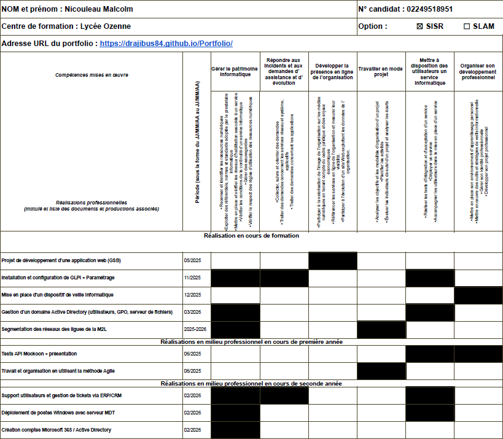

Moi
Je suis Malcolm Nicouleau, étudiant en BTS SIO option SISR. Ce portfolio présente mon parcours, mes compétences, mes projets de formation, mes stages et les réalisations professionnelles mobilisées pour l’épreuve E5.
Contexte lycée
Je suis actuellement en BTS SIO au lycée Ozenne. Cette formation me permet de développer des compétences en administration systèmes et réseaux, cybersécurité, support informatique, virtualisation et déploiement de services.
Mon parcours
Bac général
Spécialités NSI, SVT et Mathématiques.
BTS SIO SISR
Formation orientée systèmes, réseaux, support, sécurité et déploiement.
Stages
Expériences en développement, support utilisateurs, déploiement et gestion d’environnement technique.
Compétences
Tableau de synthèse
Vue directe de mon tableau de synthèse :

Projets et activités
Projet de développement d’une application web (GSB)
Projet de groupe autour d’une application web.
Voir documentInstallation et configuration de GLPI
Mise en place d’un outil de gestion de parc et de tickets.
Voir documentSéparation des réseaux des ligues de la M2L
Projet réseau avec VLAN, segmentation et architecture logique.
Voir documentTests API Mockoon + présentation
Découverte, test et présentation d’un outil pour les développeurs.
Travail et organisation en utilisant la méthode Agile
Découverte du fonctionnement d’équipe et de l’organisation projet.
Rapport de stage 1ère année
Présentation de mes missions et activités réalisées durant le stage.
Voir documentSupport utilisateurs et gestion de tickets
Assistance, résolution de problèmes et suivi des demandes.
Déploiement de postes Windows avec MDT
Préparation et déploiement automatisé de postes clients.
Création de comptes Microsoft 365 / Active Directory
Gestion de comptes et mise à disposition de l’environnement utilisateur.
Veille technologique
J’ai mis en place un dispositif de veille technologique afin de suivre l’actualité des systèmes, réseaux, cybersécurité et outils informatiques.